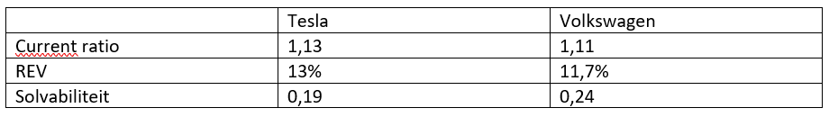

Smart Research: Smart of niet-smart? Welke organisatie doet het beter?
Geschreven door Mirja Vink
Vanuit de opleiding Finance and Control heb ik meerdere malen een bedrijfsvergelijking mogen maken. Allereerst deed ik dit vooral over concurrerende bedrijven, die in hun kern niet veel van elkaar verschilden, maar afgelopen jaar heb ik deze opdrachten specifiek gedaan over bedrijven waar mijn interesses liggen. Ik heb een bedrijfsvergelijking geschreven over ASN bank (een duurzame bank) en Rabobank (een normale bank). Ik ga voor deze minor een bedrijfsvergelijking maken tussen SMART en niet-SMART bedrijven. Hierbij wil ik gaan kijken of de volwassenheid van een bedrijf op het gebied van SMART industry impact heeft op de winstgevendheid van de organisatie. Ik heb ik een vergelijking gemaakt tussen smart en niet-smart bedrijven. Dit heb ik gedaan om te kijken of de volwassenheid van een organisatie op het gebied van SMART industry een impact heeft op winstgevendheid van een organisatie. De organisaties die ik wilde vergelijken zijn:
- Picnic: een SMART supermarkt. Picnic heeft een business model bedacht dat veel steunt op technologie. Picnic heeft een app ontwikkeld, waarmee de klant online de boodschappen kan bestellen. Dit wordt dan op een vast moment per week bezorgd. Daarnaast is Picnic bezig met het ontwikkelen van een grid voor order-picking robots.
- Albert Heijn: een normale supermarkt. Een van de grootste spelers in het supermarkt segment.
In deze SWOT analyse vallen de sterktes, zwaktes, kansen en bedreigingen van de Albert Heijn te zien.
 Figuur 2: SWOT Picnic
Figuur 2: SWOT PicnicIn deze SWOT analyse vallen de sterktes, zwaktes, kansen en bedreigingen van Picnic te zien.
Financiële vergelijking
Voor de financiële vergelijking heb ik twee autofabrikanten gepakt:- Tesla: Tesla, Inc. ontwerpt, ontwikkelt, produceert en verkoopt elektrische voertuigen en ontwerpt, produceert, installeert en verkoopt producten voor de opwekking en opslag van zonne-energie. De segmenten van de onderneming omvatten de automobielsector en de opwekking en opslag van energie (Tesla, sd).
- Volkswagen: Volkswagen AG is een in Duitsland gevestigde onderneming die voertuigen produceert en verkoopt. Zij is actief in vier segmenten: Passenger Cars, Commerciële voertuigen, Power Engineering en Financial Services (Volkswagen, sd).
Current Ratio: De current ratio geeft de liquiditeit van de banken weer. Volgens (De Keijzer & Renaud, Liquiditeit, 2016) geeft de current ratio een indicatie of een onderneming op korte termijn haar schulden kan afbetalen. Om de current ratio te berekenen moet het kort vreemd vermogen gedeeld worden door de vlottende activa. Als deze ratio 1 of hoger is, is een organisatie in staat om de kortlopende schulden op korte termijn af te betalen.
Rentabiliteit eigen vermogen (REV): Dit kengetal geeft de verhouding weer tussen de nettowinst en het gemiddelde eigen vermogen. Het gemiddelde voor normale ondernemingen ligt tussen de 5 en 10%. Dit is brancheafhankelijk en afhankelijk van hoe groot het bedrijf is. Zo kan een beursgenoteerde onderneming tevreden zijn met 4%, terwijl een eenmanszaak streeft naar 15% of meer. (De Keijzer & Renaud, 2016)
Solvabiliteit: De mate waarin de onderneming aan haar financiële verplichtingen op lange termijn kan voldoen. Het solvabiliteitsratio is hiervoor een goede indicatie. Een bedrijf is solvabel als er ingeschat wordt dat zij het geleende vormogen binnen lange termijn (meer dan één jaar) zou kunnen terug betalen. Er wordt bij het solvabiliteitsratio gekeken naar de verhouding eigen vermogen ten opzichte van de totale activa. Er wordt een norm van 0,4 aangehouden, dan kan de boekwaarde van de onderneming nog met 40% dalen en kunnen alle schuldeisers nog terugbetaald worden. (De Keijzer & Renaud, 2016).
Conclusie
De cijfers van Tesla en Volkswagen liggen zo dichtbij elkaar dat er geen conclusie getrokken kan worden uit deze bedrijfsvergelijking. Er valt niet te zeggen of SMART bedrijven het beter doen dan normale bedrijven.
Beide bedrijven zijn liquide, dit blijkt uit de current ratio. Daarnaast is de rentabiliteit van het eigen vermogen ook positief, er is nog ruimte om meer te lenen omdat de rentabiliteit boven de 10% zit.
Beide bedrijven zijn niet solvabel, allebei hebben zij een ratio onder de 0,4.Er zijn geen harde conclusie te trekken uit dit onderzoek, er zouden veel meer bedrijven onderzocht moeten worden om te kijken of hier een trend in zit.
Bibliografie
De Keijzer, P., & Renaud, J. (2016). Liquiditeit. In P. De Keijzer, & J. Renaud, Financieel management en financiering (pp. 239-244). Utrecht: Noordhoff Uitgevers.
Over albert Heijn . (sd). Opgehaald van https://www.ah.nl/over-ah
Picnic. (sd). Opgehaald van https://picnic.app/nl/
Tesla. (sd). Opgehaald van https://www.tesla.com/nl_nl/
Volkswagen. (sd). Opgehaald van https://www.volkswagen.nl/over-volkswagen
Reuters. (sd).